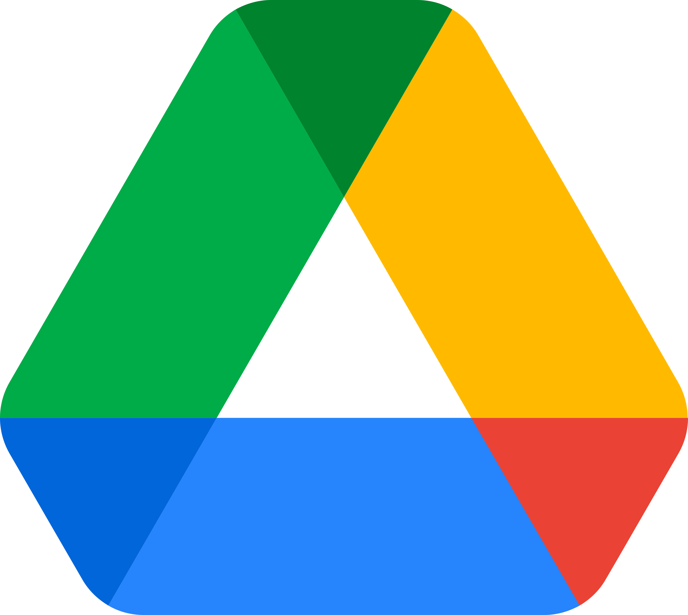
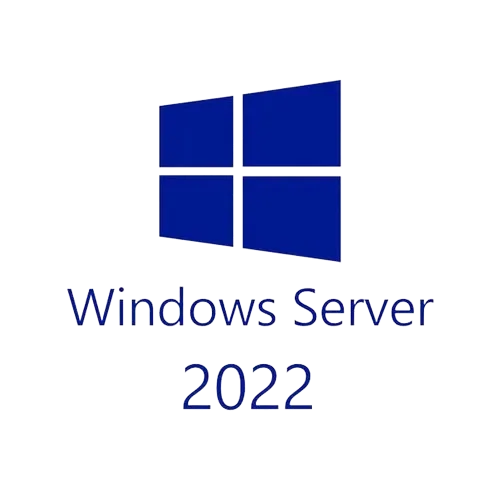

Nous devions incarner le rôle d’un technicien chargé de mettre en place l’infrastructure système (Windows Server et Active Directory) et réseau du site de Chasseneuil de TiersLieux86, puis la faire évoluer afin d’accueillir un nouveau client, ValorElec (20 collaborateurs Direction / Commercial / R&D). Nous avons utilisé des VM et des documents collaboratifs pour assurer le suivi du projet.
Atelier de professionnalisation
CNED / BTS SIO SISR
Décembre 2025 - Mars 2026
3 mois
 Trello
Trello

Google Drive Google Docs
Google Docs
 Excel
Excel

Windows Server 2022 Windows Education 11
Windows Education 11
 TrueNAS
TrueNAS
Projet web communautaire dédié au gaming, en cours de développement.